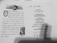
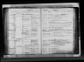
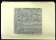
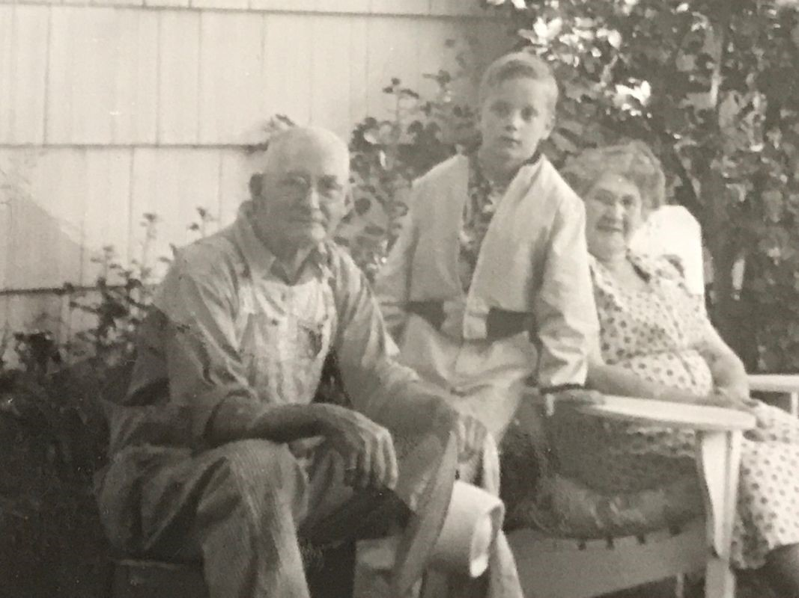
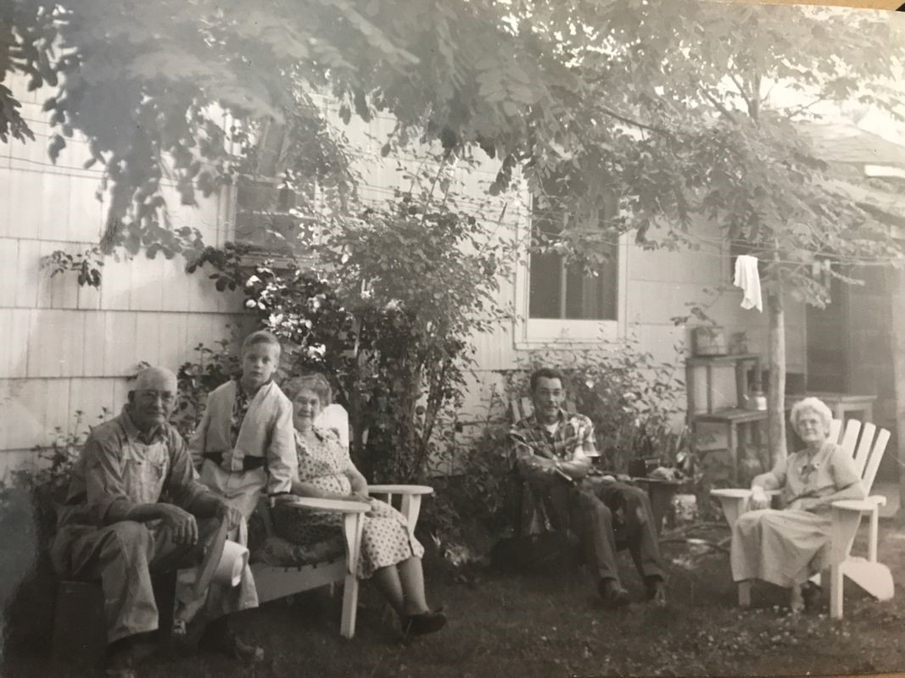
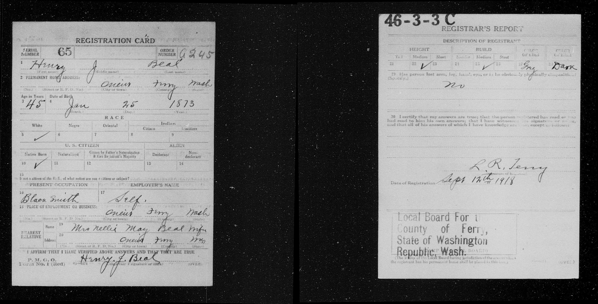
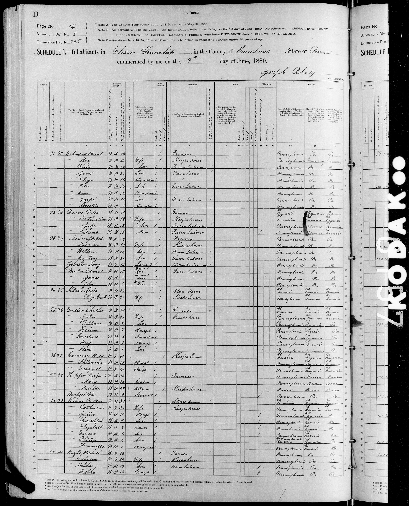
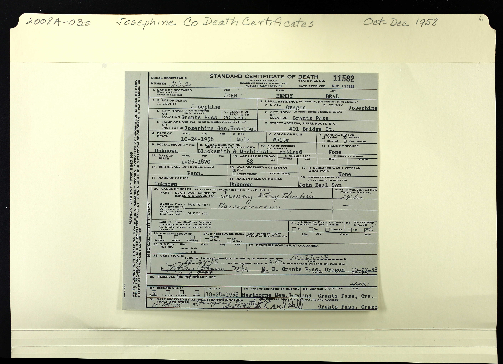
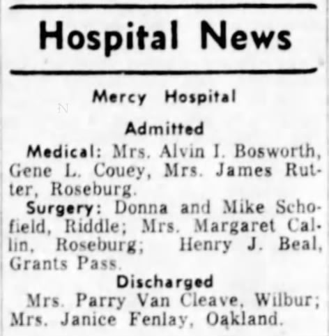

Beal, Henry John 1a 2a
| Birth Name | Beal, Henry John |
| Also Known As | Beal, John Henry |
| Gender | male |
| Age at Death | 88 years, 8 months, 30 days |
Notes
Note: 1
Contradicting information:
1. Appearance: My Heritage Trees webpage states "Blond and Blue eyes, seems to have acted as the oldest brother for the Dunlap children- keeping an eye on them and keeping in touch through the years."
However draft registration card states "Grey" eyes and "Dark" hair
2. Birth Date: Funeral announcement reports birth as "Jan 25 1870". Draft card states Jan 25 1873. Headstone states "1870".
3. Name: John Henry Beal (funeral announcement). Henry J (Headstone).
Note: 2
"Funeral announcement of John Henry Beal, he often went by Henry John Beal, he took off the s off Beals."
Note: 3
May have lived with grandfather John Ashcraft according to 1880 census (he would have been 6 yrs old)
Events
| Event | Date | Place | Description | Sources |
|---|---|---|---|---|
| Occupation | 1819 | Blacksmith | 2a 1a 3a | |
|
|
||||
| Military Service | 9/12/1819 | Fought in World War 1, he enlisted at 25. | ||
|
|
||||
| Birth | 1/25/1870 | Pittsburgh, Allegheny, Pennsylvania, USA | 4a | |
|
Note: 1
"Possibly on the same farm. Thought to be part of a indian reservation. He was taised byhis grandfather John Ashcraft." Funeral announcement incorrectly reports birth as "Jan 25 1870" |
||||
| Birth | 1/25/1873 | 5a 6a | ||
|
|
||||
| Occupation | 1906 | Meyersdale, Somerset, Pennsylvania, USA | Coal Miner | 1a |
|
|
||||
| Medical Information | about 3/25/1958 | Mercy Hospital, Roseburg, Douglas, Oregon, USA | Admitted to hospital for surgery | 7a |
|
|
||||
| Census | 1920 | Smead, Sanders, Montana, USA | ||
|
|
||||
| Census | 1930 | Kennewick, Benton, Washington, USA | 5a | |
|
|
||||
| Residence | after 1938 | Grants Pass, Josephine, Oregon, USA | 3a | |
|
|
||||
| Marriage | 3/8/1943 | Ida Francis Peal Alexander Beal | 1a | |
|
|
||||
| Death | 10/24/1958 | Josephine General Hospital, Grants Pass, Josephine, Oregon, USA | 1a | |
|
Note
Cause: Coronary artery thrombosis. Due to: Arteriosclerosis. |
||||
| Burial | Hawthorne Memorial Gardens, Grants Pass, Josephine, Oregon, USA | 1a | ||
|
|
||||
| Occupation | Montana, USA | Farmer | 2a | |
|
|
||||
| Property | Leech Lake, Cass Lake, Cass, Minnesota, USA | Purchase of 160 acres of ceded Chippewa lands | 8a | |
|
|
||||
Families
Family of Beal, Henry John and Barton, Nellie Mae/May |
|||||||||||||||
| Married | Wife | Barton, Nellie Mae/May ( * 3/30/1884 + 12/17/1973 ) | |||||||||||||
|
|||||||||||||||
| Children | |||||||||||||||
| Name | Birth Date | Death Date |
|---|---|---|
| Beal, John Steven | 11/3/1913 | 5/5/1985 |
Media













Family Map
Pedigree
-
- Beal, Henry John
Source References
-
Online Users: MyHeritage Family Trees Webpages
-
- Page: John Henry Beals; https://records.myheritagelibraryedition.com/research/record-1-339007801-1-528857/john-henry-beals-in-myheritage-family-trees
-
Citation:
Source:
MyHeritage Family Trees
MyHeritage.com [online database], MyHeritage Ltd.
https://records.myheritagelibraryedition.com/research/collection-1/myheritage-family-treesFamily tree:
Beal Web Site, managed by Christine Beal
https://records.myheritagelibraryedition.com/site-339007801/bealRecord:
https://records.myheritagelibraryedition.com/research/record-1-339007801-1-528857/john-henry-beals-in-myheritage-family-treesCitation:
John Henry Beals
Birth: Jan 25 1870 - Hastings Cam, Pennsylvania, United States
Death: Oct 24 1958 - Grants Pass, Josephine, Oregon, United States
Parents: Abraham Beals, Mary Effie Beal Dunlap (born Ashcraft)
Siblings: Edward Beals, James Beals, Harry (Jim) Dunlap, Agnes Pease Kelso (born Dunlap), Ida Mae Pease (born Dunlap), Ida Mae Pease (born Dunlap), Mary Evalina Trowbridge (born Dunlap), Mary Evalina Lawton (born Dunlap Trowbridge)
Wife: Nellie Mae Barton
Wife: Ida Francis Alexander- Beals (born Peals)
Wife: Clara Amelia Beals (born Jones)
Wife: Rettie Beals (born Walters)
Children: Richard Lynn Kelly, John Stepherson Beals, Thomas Half Brother Beals
-
-
Online Users: Find a Grave Webpages
-
- Page: John S Beal; https://www.findagrave.com/memorial/63046540/john-s-beal
-
-
Oregon, U.S., Death Index
-
- Page: Oregon State Archives; Salem, Oregon; Oregon, Death Records, 1864-1967
-
Citation:
Source Citation
Oregon State Archives; Salem, Oregon; Oregon, Death Records, 1864-1967Description
Year: 1958Source Information
Ancestry.com. Oregon, U.S., State Deaths, 1864-1971 [database on-line]. Lehi, UT, USA: Ancestry.com Operations, Inc., 2021.
Original data:Oregon Death Records, 1864-1971. Salem, Oregon: Oregon State Archives.
-
-
US, WWI, Draft Registration Cards
-
- Date: between 1917 and 1918
- Page: https://www.fold3.com/publication/959/us-wwi-draft-registration-cards-1917-1918
-
Citation:
Fold3, US, WWI, Draft Registration Cards, 1917-1918 (https://www.fold3.com/publication/959/us-wwi-draft-registration-cards-1917-1918 : accessed Dec 20, 2024), database and images, https://www.fold3.com/publication/959/us-wwi-draft-registration-cards-1917-1918
-
-
Washington Census
-
- Date: 1930
- Page: Kennewick
-
-
Montana Census
-
- Date: 1920
- Page: Smead Township
-
-
The News-Review (Roseburg, Oregon)
-
- Date: 3/25/1958
- Page: Page 2
-
-
United States, Bureau of Land Management Tract Books, 1800-c. 1955
-
- Date: 10/24/1913
- Page: Henry John Beals; https://www.familysearch.org/tree/person/sources/LJVY-KH7
-
Citation:
"United States, Bureau of Land Management Tract Books, 1800-c. 1955", , FamilySearch (https://www.familysearch.org/ark:/61903/1:1:6NL7-4KCN : Fri Mar 08 22:41:39 UTC 2024), Entry for John H Beals, 24 Oct 1913.
-
-
Iowa, U.S., Marriage Records
-
- Page: Iowa, U.S., Select Marriages Index, 1758-1996
-
Citation:
Source Information
Ancestry.com. Iowa, U.S., Select Marriages Index, 1758-1996 [database on-line]. Provo, UT, USA: Ancestry.com Operations, Inc., 2014.Original data: Iowa, Marriages. Salt Lake City, Utah: FamilySearch, 2013.
FHL Film Number 986014
Reference ID 2:3KB5JFF
-